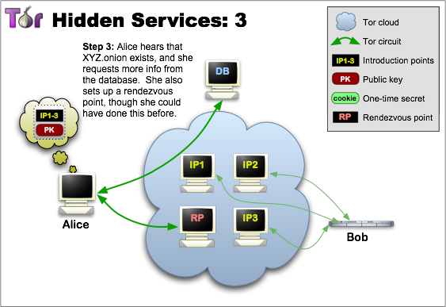
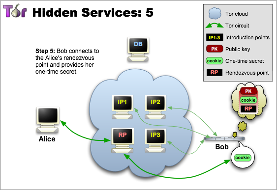

Anonymous browsing and Deep Web
Contents
- Introduction
- Internet, WWW, Deep Web, Dark Web
- Cryptography 101
- Communication protocols 101
- Tor in detail
- Other systems, uses and applications
- Analysis
- Hands on
Motivation and overview
Definitions and comparison
Hashes
Symmetric and asymmetric cryptography
Other cryptographic mechanisms
TCP/IP Packets
Data encapsulation
Origins and properties
Circuit creation
Hidden services
Advanced concepts
Toolset
I2P, Freenet, anonymizing proxies, etc.
Illegal markets, anti-censorship
Relation with cryptocurrencies
De-anonymizing attacks
Stem intro
Circuit picking
Tor network mapping
HSDirs mapping
OR in the middle
Torification
Introduction
Motivation
Image source: Deep Web Technologies
Internet, WWW, Deep Web, Dark Web
Definitions and comparison
Internet
Global system of interconnected computer networks using the Internet protocol suite (TCP/IP).
Source: Wikipedia
WWW
Set of resources with unique identifiers in the Internet.
Using HTML and related technologies.
Accessible through web browsers.
Deep Web
Parts of the Web not indexed by search engines.
Surface Web: indexed by search engines.
Dark Web
Uses the Internet...
... to build an overlay (web) network ...
... that requires special software to be accessed.
Relationships
Internet $\supset$ WWW
Internet $\supset$ Deep Web
Internet $\supset$ Dark Web
WWW $=$ Deep Web $\cup$ Surface Web
WWW $\supset$ Deep Web
Deep Web $\supset$ Dark Web
Image source: Deep Web Technologies
Cryptography 101
Cryptographic hashes
Symmetric and asymmetric cryptography
Other cryptographic mechanisms
Cryptographic hashes
Functions that:
- Are easy to calculate.
- Are (very) hard to invert.
- If even just one bit of the input changes, roughly 50% of the bits of the output change too.
- It is hard to find two inputs with the same output.
- Provide integrity.

Source: Wikimedia.
{kind=link}
$ echo "Hello, World!" | openssl dgst -sha256 -hex
(stdin)= c98c24b677eff44860afea6f493bbaec5bb1c4cbb209c6fc2bbb47f66ff2ad31
Hashes for evidence gathering and chain of custody.
$ dd if=/dev/sda1 of=sda1_dump bs=64K conv=noerror,sync
$ sha256sum sda1_dump > sda1_dump.sha256
Symmetric and asymmetric cryptography
Symmetric cryptography
- Same key for encryption and decryption.
- Provide confidentiality.
- Problem: key distribution.
Source: etutorials.
$ echo "Hello, World!" | openssl enc -e -aes-256-cbc > data.enc
enter aes-256-cbc encryption password:
Verifying - enter aes-256-cbc encryption password:
$ openssl enc -d -aes-256-cbc -in data.enc
enter aes-256-cbc decryption password:
Hello, World!
Asymmetric cryptography
- Different keys for "encryption" and "decryption".
- Can be used to provide:
- Confidentiality (public-key encryption).
- Authenticity (digital signatures).
- Key-exchange mechanisms.
Source: ibm.com.
Source: bestvpn.com.
$ openssl genpkey -algorithm RSA -out private_key.pem -pkeyopt rsa_keygen_bits:2048
$ openssl rsa -pubout -in private_key.pem -out public_key.pem
$ echo "Hello, World!" > msg
$ openssl rsautl -sign -inkey private_key.pem -keyform PEM -in msg > msg.sig
$ openssl rsautl -verify -inkey public_key.pem -pubin -keyform PEM -in msg.sig
Hello, World!
$ echo "Hello, World!" > msg
$ openssl dgst -sha256 -sign private_key.pem -out msg.sig msg
$ openssl dgst -sha256 -verify public_key.pem -signature msg.sig msg
Verified OK
Other cryptographic mechanisms
Diffie-Hellman Key Exchange
Source: Wikimedia.
Digital Envelopes (send)
Source: Sixscape.
Digital Envelopes (receive)
Source: Sixscape.
Communcation protocols 101
TCP/IP Packets
Data encapsulation
The header of an IP packet contains the IP address of both source and destination.
$ sudo tcpdump -i any dst port 443 -n
tcpdump: verbose output suppressed, use -v or -vv for full protocol decode
listening on any, link-type LINUX_SLL (Linux cooked), capture size 65535 bytes
22:53:03.650759 IP 192.168.1.106.52563 > 151.101.12.201.443: Flags [.], ack 3624565601, win 2312, options [nop,nop,TS val 1579448 ecr 1205386751], length 0
22:53:06.650698 IP 192.168.1.106.37807 > 68.232.35.121.443: Flags [.], ack 1896903471, win 435, options [nop,nop,TS val 1580198 ecr 409092328], length 0
22:53:06.650750 IP 192.168.1.106.58231 > 23.215.21.87.443: Flags [.], ack 2827807890, win 367, options [nop,nop,TS val 1580198 ecr 717034815], length 0
22:53:06.698735 IP 192.168.1.106.37809 > 68.232.35.121.443: Flags [.], ack 4009380063, win 480, options [nop,nop,TS val 1580210 ecr 406386672], length 0
22:53:06.702362 IP 192.168.1.106.49251 > 216.58.194.163.443: Flags [S], seq 2245240006, win 29200, options [mss 1460,sackOK,TS val 1580210 ecr 0,nop,wscale 7], length 0
$ traceroute www.google.com
traceroute to www.google.com (172.217.21.4), 30 hops max, 60 byte packets
1 Livebox (192.168.1.1) 2.423 ms 4.846 ms 4.813 ms
2 89.131.6.62 (89.131.6.62) 26.203 ms 27.657 ms 29.360 ms
3 10.255.229.113 (10.255.229.113) 28.125 ms 28.757 ms 29.829 ms
4 10.255.140.229 (10.255.140.229) 30.936 ms 34.057 ms 34.530 ms
5 10.34.194.17 (10.34.194.17) 33.602 ms 34.250 ms 35.190 ms
6 10.34.194.5 (10.34.194.5) 37.569 ms 25.481 ms 25.917 ms
7 bundle-ether4.madtr2.madrid.opentransit.net (193.251.247.13) 31.764 ms 29.949 ms 24.258 ms
8 72.14.209.130 (72.14.209.130) 24.809 ms 25.336 ms 26.332 ms
9 209.85.252.150 (209.85.252.150) 26.880 ms 27.560 ms 216.239.50.28 (216.239.50.28) 29.353 ms
10 209.85.245.237 (209.85.245.237) 52.276 ms 46.636 ms 52.910 ms
11 209.85.255.253 (209.85.255.253) 57.457 ms 60.200 ms 72.14.232.30 (72.14.232.30) 60.861 ms
12 216.239.57.195 (216.239.57.195) 60.848 ms 216.239.57.134 (216.239.57.134) 60.801 ms 216.239.57.195 (216.239.57.195) 61.254 ms
13 72.14.236.53 (72.14.236.53) 47.795 ms 48.822 ms 48.487 ms
14 www.google.com (172.217.21.4) 49.037 ms 50.416 ms 51.194 ms
Image source: Technology UK
Tor in detail
Origins and properties
Circuit creation
Hidden services
Directory
Bridges
Toolset
Origins and properties
From Tor Project's overview:
The Tor network is a group of volunteer-operated servers that allows people to improve their privacy and security on the Internet.
Good uses
- Journalists: communication with whistleblowers and dissidents.
- Corporations: protect sensitive business "side" information from communication analysis.
- U.S. Navy: Open source intelligence gathering.
- Censorship circumvention.
Bad uses
- Purchase illegitimate goods.
- Extortion, blackmailing.
- Download of copyright protected data.
- Cyberattacks and malware.
Source: Wikipedia.
{kind=link}

Easy to use Tor browser bundle.
Easy to install Tor relay.
- Proposed by Dingledine et al. in 2004.
- Based on onion routing.
- Each message is routed through several proxies, each adding an encryption layer.

Circuit creation
Employed cryptographic primitives:
- Public key encryption.
- DH key negotiation.
- Hashes.
Properties ensured during and through handsake:
- Forward secrecy.
- Key freshness.
- OR authenticity.
A good resource to get information about the Tor network:
Blutmagie's torstatus.
Hidden services
Used to provide responder anonymity.
- Only accessible through Tor.
- Client never learns where is the HS located.
Hidden services are a major component of the Dark Web.

Source: Tor Project.

Source: Tor Project.

Source: Tor Project.

Source: Tor Project.

Source: Tor Project.

Source: Tor Project.
How to browse/find .onion hidden services
The Hidden Wiki's hidden service was seized during operation Onymous.
But it seems that it is back online.

Entry Guards
- Using a new entry node per circuit increases probability of attack.
- Entry guards: few preselected random nodes, always used as entry.
- Attacker have less overall probability of success.
More info: Tor Project FAQ
Bridges
- Anticensorship tool.
- No complete list of Tor bridges is publicly availble.
- Thus, ISPs can't directly block them.
- Related: DPI and Tor's pluggable transports.
More info: Tor Project Bridges and BridgeDB.
Directory and consensus
- Earliest version: list of servers included in software distribution.
- Version 1: authorities sent signed directory docs with servers info.
- Version 2: authorities sent signed network status; clients believe statements with more than 50% endorsing authorities.
- Version 3: authorities vote on common consensus; also optimization and security improvements.
- Data of 10 authorities is included in software distribution.
- Authorities vote on the network status document.
- When they reach consensus, the status info is updated.
- Updates occur periodically, in predefined intervals.
More info: How Tor Works Part Three - The Consensus
Hidden Service directories
A router is a v2 hidden service directory if it stores and serves v2 hidden service descriptors, has the Stable and Fast flag, and the authority believes that it's been up for at least 96 hours.
Hidden Service directories
Descriptor = H(pub. key id || H(desc-cookie* || time-period || replica index))
Source: "Trawling for Tor Hidden Services: Detection, Measurement, Deanonymization"
Metrics
Toolset
Main resource: Stem.
Interesting third party resources:
Other systems, uses and applications
I2P, Freenet, anonymizing proxies, etc
Illegal markets, anticenshorship
Relation with cryptocurrencies
I2P
The Invisible Internet Project
- Similar to Tor:
- Aimed at anonymization.
- Based in onion routing.
- But different:
- Focuses on hidden services.
- Evolves onion routing into garlic routing.
Image source: I2P website
- Each node creates two inbound tunnels (circuits) and two outbound tunnels.
- For A to communicate with B:
- A sends data through one of her outbound tunnels.
- A instructs the tunnel endpoint to forward the data to B's inbound tunnel.
- Each tunnel may be composed of up to 7 nodes.
- Between tunnels, up to 2 hops are possible.
- Tunnels are unidirectional.
- It is possible to bundle multiple messages under the same public key.
- This creates the garlic's cloves.
- These bundles are also "onion-encrypted" and go through several routers.
- I2P supports exit nodes to route to the "external Internet".
- But it is focused to .eep sites $\approx$ Tor's hidden services.
- Thus, it mostly provides end-to-end encryption.
- A key component is its netDB (a DHT $\approx$ Tor's directory).
- It cointains information about I2P routers and .eep sites.
- It contains two types of metadata: leaseSet and routerInfo.
- The leaseSet has information about endpoints:
- Inbound gateway information.
- Inbound tunnel lifetime.
- Public keys.
- The routerInfo provides information about routers:
- Public keys.
- IP addresses.
Concerning cryptography, I2P uses:
- Digital envelopes (ElGamal+AES).
- For garlic messages.
- Several keys are exchanged between endpoints, identified with SessionTags.
- Diffie-Hellman exchange for router to router connections.
- SHA256 and HMACs for additional integrity and authentication guarantees.
Freenet
An anonymous peer-to-peer network for publication, replication and retrieval of data.
Reference work: Freenet: A Distributed Anonymous Information Storage and Retrieval System
- Each file is identified with a unique file key[word].
- Not a cryptographic key, a unique name or label for referencing.
- Each node is also identified with a unique random bitstring.
- Nodes tend to store files with keyword similar to their identities.
- Files are encrypted to protect nodes.
Searching and storing files
Image source: Freenet's paper
Three main ways of storing files:
- Based on Keyword Signed Keys (KSKs).
- Based on Subspace Signed Keys (SSKs).
- Based on Content Hash Keys (CHKs).
The most powerful is a combination of SSKs and CHKs.
Subspace Signed Keys (SSKs)
- $(pk_{SSK},sk_{SSK}) \leftarrow Random$
- $k_{SSK} \leftarrow f(string)$
- $string$ is a descriptive string given to (humanly) identify the file.
- $keyword_{SSK} \leftarrow SHA1(SHA1(pk_{SSK}) \oplus SHA1(string))$
Subspace Signed Keys (SSKs)
- Files are encrypted with $k_{SSK}$
- Files are signed with $sk_{SSK}$
- Files are retrievable using $pk_{SSK}$ and $string$.
- Only the owner of $sk_{SSK}$ can store files in his space.
- $pk_{SSK}$ defines his subspace.
Content Hash Keys (CHKs)
- $keyword_{CHK} \leftarrow SHA1(file)$
- $k_{CHK} \leftarrow random$
- Files encrypted/decrypted with $k_{CHK}$
- Files retrievable using $keyword_{CHK}$
Storage using SSKs and CHKs
Uses and applications
Good and bad
Privacy protection and anticensorship
- Privacy: protection against traffic monitoring.
- But careful with the data you transmit!
- Anticenshorship:
- If a country X blocks connections to certain websites.
- If it also blocks Tor, use bridges.
Illegal markets
Silkroad was an illegal market selling drugs, arms, pedophile content.
- Seized in late 2013.
- Used Tor Hidden Services to prevent tracking their servers location.
- Also used cryptocurrencies for anonymous payments (well...).
Malware
Anoymity and cryptocurrencies
We have already talked about Silk Road et al., but...
- e-cash (usually) aims at achieving the same properties than physical cash.
- This implies untraceability.
- Untraceability requires anonymity.
- Communications anonymity can only be achieved through systems like Tor.
- Otherwise, attacks like these are possible.
- Bitcoinj client includes support for Tor.
Also, the relationship between anonymizing networks and cryptocurrencies has been proposed the other way around:
Analysis
De-anonymizing attacks and issues
Tor's threat model
A threat model defines the assumptions made about the ecosystem. Mainly, attacker capabilities, behavior of entities in the system and target properties to ensure.
Tor, and most low-latency anonymity networks, assume that (from " Tor: The Second-Generation Onion Router"):
- The attacker cannot monitor the complete newtork.
- In particular, it can only observe some fraction of the network.
- The attacker can be passive:
- Observe network edges.
- Correlate traffic (timing, volume, etc.).
- Or active:
- Subvert directory state.
- Attack specific nodes to manipulate the network.
- Insert malicious traffic patterns.
Common issues
- DNS leaks:
- External applications making DNS requests.
- Then routing traffic through Tor.
- But this may enable traffic correlation analaysis.
- Website fingerprinting.
- The attacker is located at the user's side.
- Applies machine learning to traffic pattern (packet sizes, inter-packet timing, etc.).
- Browser fingerprinting:
- Size of the browser window (don't resize).
- Canvas fingerprinting (HTML5).
- Software vulnerabilities:
- Malicious JavaScript used to exploit browser vulnerabilities.
- Tor Browser Bundle is based on Mozilla Firefox.
Traffic correlation/confirmation attacks
Deanonymizing hidden services
Strategy proposed in "Trawling for Tor Hidden Services: Detection, Measurement, Deanonymization"
Key observation: when establishing connections with a hidden service, one end of the circuit created by the hidden service can be under the control of the attacker: the rendezvous point.
The attacker initiates the protocol to communicate with a hidden service.
- Gets the HS descriptor from the appropriate HS directory server.
- Sends a request through the Introduction Point.
- This request specifies a Rendezvous Point under the control of the attacker.
- The hidden service sets a circuit to the Rendezvous Point (choosing one of its Entry Guards.
- The Rendezvous Point sends a predefined traffic pattern down to the Hidden Service.
- If the Entry Guard is controlled by the attacker and detects the pattern,
- then deduces that the next hop is the hidden service (and has its IP address).
Image source: INCIBE.
The relay early attack
Believed to be the attack performed by Carnegie Mellon researchers that was going to be presented at the Black Hat USA conference in 2014.
Some additional background:
- Link cells: aimed at next router in the circuit.
- Relay cells: aimed at the other end of the circuit.
- Relay early cells: special type of relay cell, used to prevent congestion attacks.
The attack works for deanonymizing users accessing/publishing information about hidden services. Assumptions:
- The attacker controls the queried hidden service directory.
- The attacker controls the chosen entry guard.
- The victim establishes a circuit to a malicious hidden service directory.
- The selected entry guard is also controlled by the attacker.
- The victim queries/write information to hidden service directory.
- The hidden service directory sends a specific pattern of relay and relay early cells.
- This pattern encodes the hidden service name.
- The entry guard detects the pattern.
- Can deanonymize the user (the next hop).
But these attacks ultimately depend on the probability of using an entry guard controlled by the attacker.
Tor developers addressed these (and similar) issue(s) by increasing the frequency of changing entry guards to 9 months.
Obtainig statistics about hidden services usage
Strategy (also) proposed in "Trawling for Tor Hidden Services: Detection, Measurement, Deanonymization"
Recall that:
A router is a v2 hidden service directory if it stores and serves v2 hidden service descriptors, has the Stable and Fast flag, and the authority believes that it's been up for at least 96 hours.
And recall the structure of the hidden services directory and how is a HSDir chosen for storing a given descriptor:
Source: "Trawling for Tor Hidden Services: Detection, Measurement, Deanonymization"
The authors of the method found that:
- While only 2 relays are allowed per IP.
- Statistics are gathered for the 3+ other nodes.
- And it is possible to cheat bandwidth scanners.
So, it is possible to have more than 2 relays per IP, such that all have good statistics, even though only 2 appear in the consensus as HSDir (the other are called shadow relays).
The estimated number of IP addresses to own is:
$R = \frac{N}{12*2}$
Where $N$ is the number of hidden service directories in Tor.
Using 50 Amazon EC2 instances and additional optimization techniques, the authors reduced the costs of the attack to about 57 USD.
Hands on
Stem intro
Circuit picking
Tor network mapping
HSDirs mapping
OR in the middle
Torification
Stem intro
Stem is:
- Python library.
- Maintained by the Tor project.
- Allows to interact with a running Tor relay.
Available at stem.torproject.org
Stem modules:
- control: "Main" module, allows interacting with the Tor network through the OR.
- connection: For setting authenticated connections with the OR.
- socket: For socket communications with the OR.
- process: For launching additional Tor processes.
- response: For parsing message responses from the OR.
- exit_policy: For checking exit policies.
- version: Versioning information.
Circuit picking
Tor network mapping
HSDir mapping
OR in the middle
Torification
Options:
- Have the devs adapt the application to Tor.
- Configure the application to use a (Tor) proxy.
- Torsocks.
- Transparent proxies.
- Isolating proxies.
Torsocks:
Transparent proxy:
Routing traffic through a Tor Docker container.Isolation proxy:

Source: trac.torproject.org
Questions?
e-mail: jesus.diaz@beeva.com